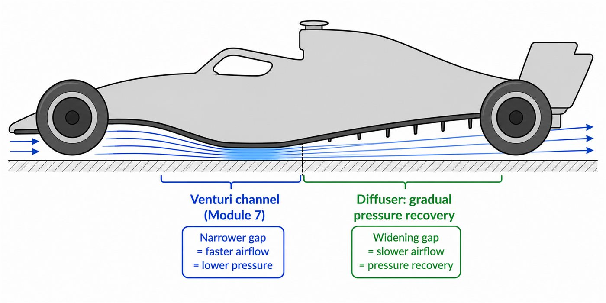
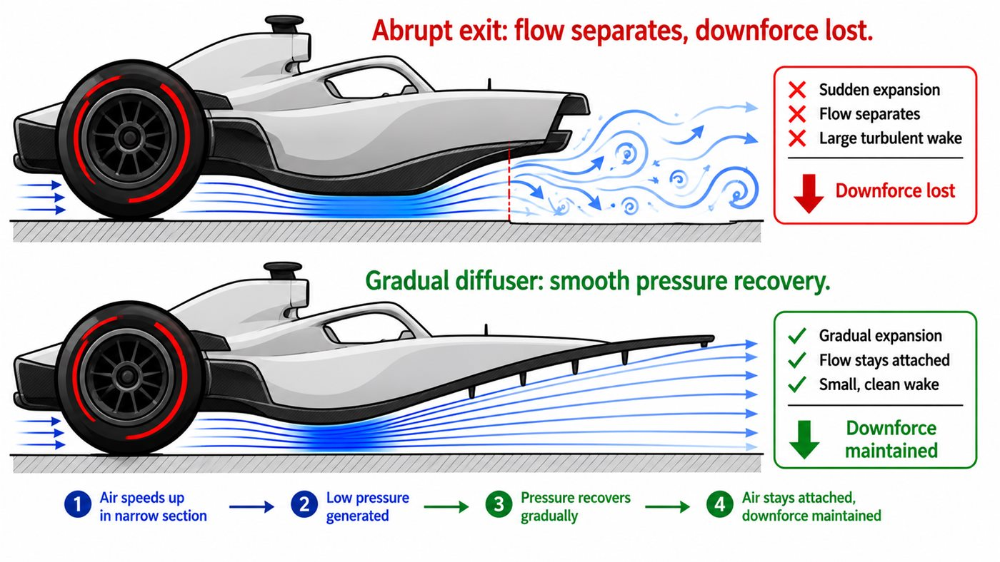
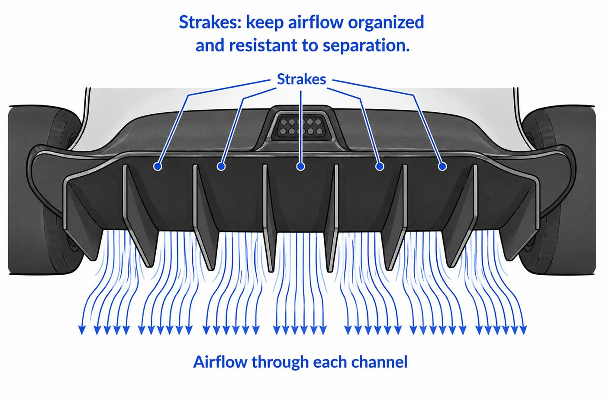

01 - CONTINUATION
The air has to leave somehow
Module 7 created fast, low-pressure air under the car. The diffuser decides how that air slows down and exits.
If the exit is handled well, the floor keeps more of its downforce. If the exit is handled badly, the flow separates and a lot of the benefit is wasted.

02 - ABRUPT EXIT PROBLEM
You cannot simply dump the air out
A sudden expansion makes the flow separate, just like abrupt shapes created messy wakes in the drag module. Under the car, that separation can reduce downforce and add drag.

03 - PRESSURE RECOVERY
The diffuser slows air down smoothly
Pressure recovery means letting fast low-pressure air return toward normal pressure without separating. A good diffuser does this gently, preserving more of the floor's downforce.
04 - STRAKES
Small fins keep the flow organised
Strakes split the diffuser into smaller channels. They help guide uneven airflow and make the flow more resistant to separation.

05 - OPTIONAL 3D CONTEXT
Look at the whole car around the floor
The model is not a simulation, but it helps students understand that the diffuser is part of the entire car shape, not an isolated ramp.
Your browser cannot display the interactive model. The diagrams still work normally.
Model credit: Mercedes amg petronas concept by Vipexgamer1, licensed under CC BY 4.0.
06 - FULL STORY
Floor and diffuser are one system
Air enters, speeds up in the narrow section, creates low pressure, then exits through the diffuser where pressure is recovered smoothly. This is why floors and diffusers are usually developed together.
GO DEEPER
Books worth opening
Race Car Aerodynamics - Joseph KatzDiffuser design and pressure recovery.
Competition Car Aerodynamics - Simon McBeathUnderbody shapes, diffuser strakes and practical design choices.
Racing technical regulationsUseful for seeing real floor and diffuser constraints.
Finished this lesson? Mark it as complete to track your progress.